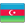

Əsas səhifə
MSK
Fəaliyyət və səlahiyyətlər
MSK-nın katibliyi
MSK tarixi
MSK-nın tərkibi
MSK tərkibi barədə qərarlar
Mətbuat xidməti
Xəbərlər
Foto qalereya
Hesabatlar
Video qalereya
Seçkilər
Hüquqi aktlar
Ali Məclisə seçkilər(06.11.2005)
Ali məclisə seçkilər(07.11.2010)
Ali məclisə əlavə seçkilər(02.10.2011)
Ali məclisə əlavə seçkilər (15.07.2012)
Ali Məclisə seçkilər(01.11.2015)
Ali Məclisə seçkilər(09.02.2020)
Foto qalereya
Əlaqə
Elektron müraciət
Əlaqə vasitələri
NEWS SINGLE PAGE
 Telefon:
Telefon: